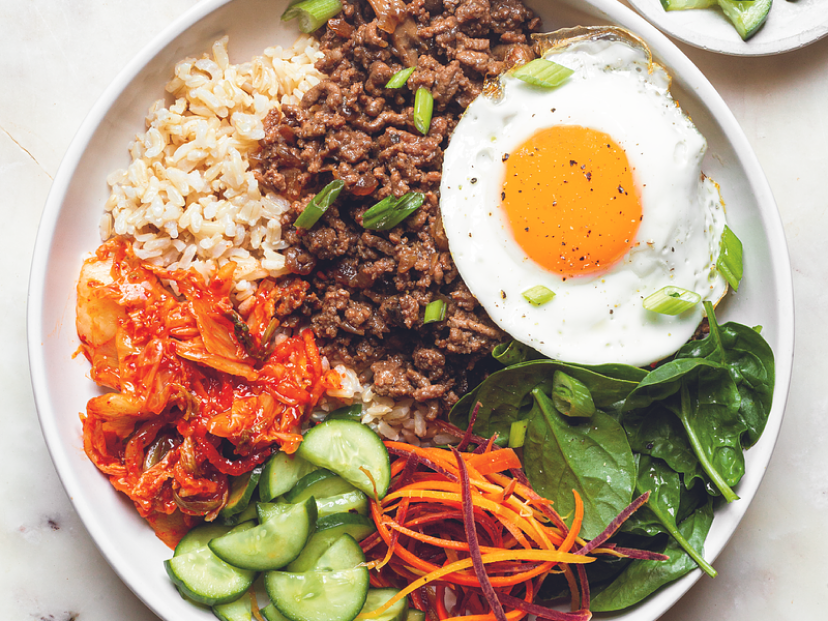

Bulgogi recipe

Description
Bulgogi (Korean: 불고기; American English /bʊlˈɡoʊɡiː/ buul-GOH-ghee; from
Korean bul-gogi [pul.ɡo.ɡi]), literally "fire meat") is a gui
(Korean-style grilled or roasted dish) made of thin, marinated slices of
meat, most commonly beef, grilled on a barbecue or on a stove-top griddle.
The dish originated from northern areas of the Korean Peninsula, but is a
very popular dish in South Korea, where it can be found anywhere from
upscale restaurants to local supermarkets as pan-ready kits.
Ingredients
- 1 pound of beef tenderloin
- 1/2 cup of crushed Korean pear
- 1/4 cup onion pureé
- 4 cloves of minced garlic
- 1 teaspoon minced ginger
- 2 tbs soy sauce
- 2 tbs brown sugar
- a pinch of ground black pepper
- 1 tbs toasted sesame oil
- several thin slices of carrot
Steps
- Mix all the marinade ingredients in a bowl.
- Add the sliced beef and mix well.
-
You can grill, pan-fry or BBQ right after marinating. It's best to keep
it in the fridge and let it marinate for at least 30 minutes
- Grill over medium-high heat.
-
Serve with Korean side dishes (banchan) like kimchi, lettuce and
ssamjang.